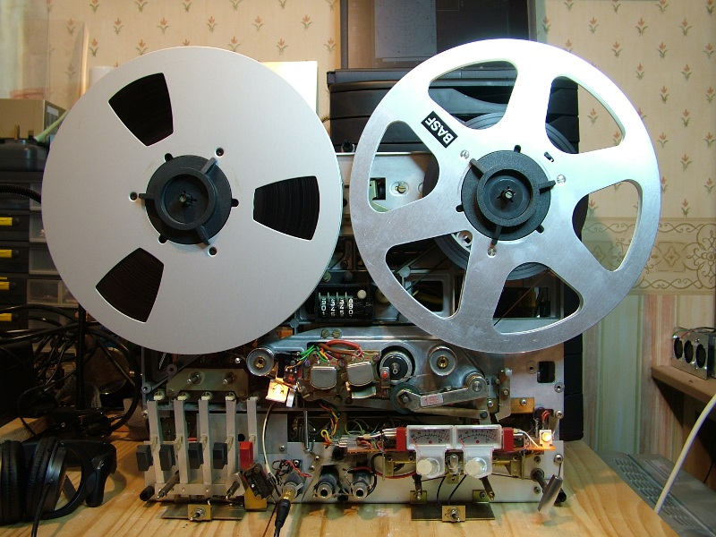
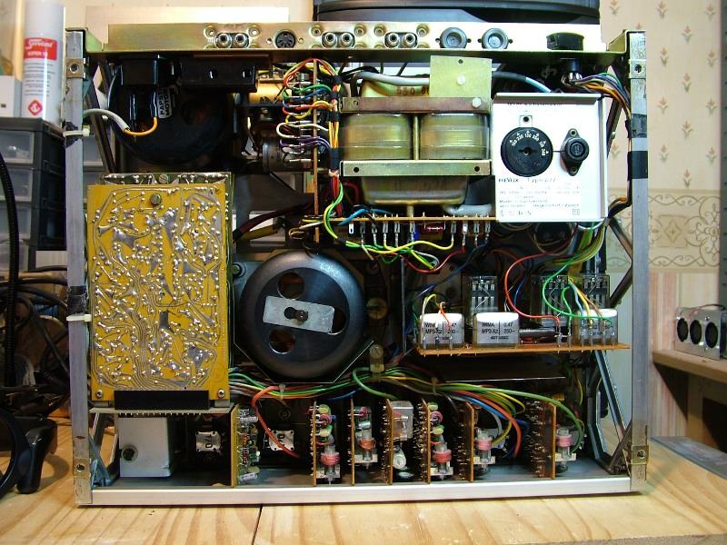
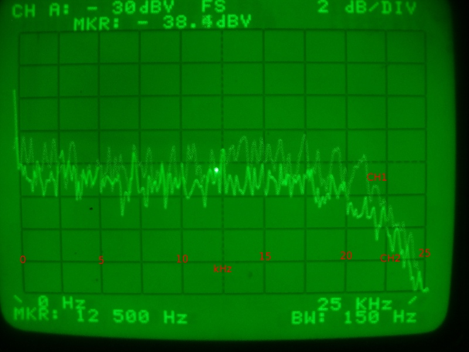
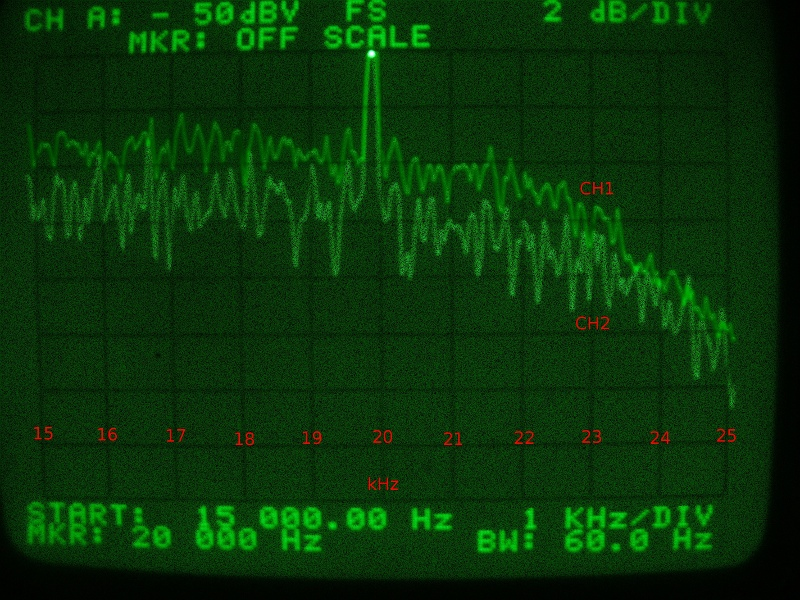
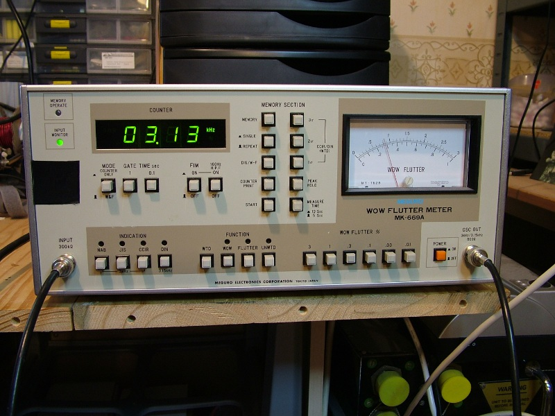
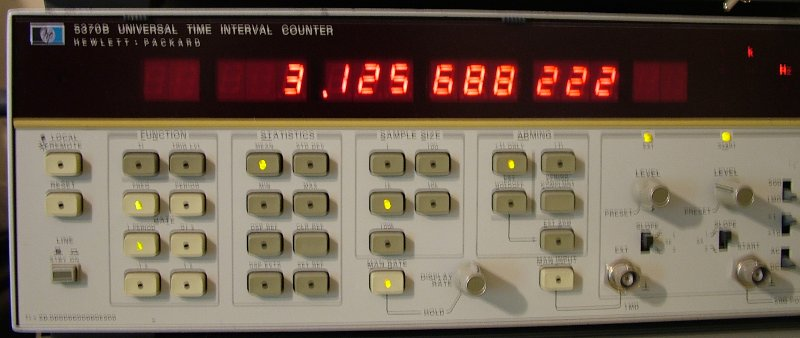
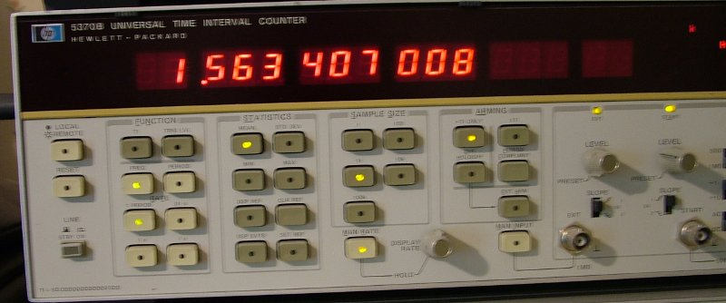

Revox A77 - 41 Years Young

Revox A77 Mk III Dolby with panels removed.
In May 2014 my A77 ground to a halt ... the capstan turned feebly about once on power on
then stopped altogether. Time to take it apart again (the last major overhaul was in August
2007, so that isn't too bad, is it?)
After a bit of thinking and reading the service manual, it looked like a problem on the servo
board was the most likely cause. If the capstan had stopped when the pinch wheel engaged, it
might have been a capstan motor lubrication problem, but stopping with no load after about
one turn didn't fit that. It could have been the capstan motor phase shift capacitor, perhaps.
The usual first step is shotgun replacement of all polarized capacitors. I admit this is a
crude technique, but it very often fixes things. And, once again, it did in this case.
While I was about it, I also replaced the infamous RIFA capacitors with new WIMA equivalents on
the control board and capstan board. In a moment of excess enthusiasm, I also replaced all but one
of the polarized capacitors on the power supply board. The whole transformer assembly
needs to come out to do this. Now - that was a pain in the neck ... Having
all three boards out for service at once involved more disassembly than I was comfortable with,
to be honest. The poor thing had disconnected wires poking out of it everywhere. Would it ever
work again?
Well, yes - it did! And does. Below is a photograph showing the replaced RIFA capacitors (other
renewed bits are not visible).

When reassembling the control board, I managed to get one of the connections wrong. Note carefully
the two green wires on the right most group of connections. The green wire from the reel motor
phase shift capacitor (the other lead from that is red) must go to the right most connector. I managed
to swap those two green wires which made the left hand (seen from front) reel motor not work. Fortunately,
no harm was done.
Re-alignment
Having had it in several dozen pieces, it seemed only fair (and wise) to demagnetize and realign
the machine once it was working again. I described how to do this
here
so I won't repeat it on this page.
Here are the results of some tests after everything was done ...

Above is a measurement of the frequency response over 20Hz to 20kHz done with the HP-3582A spectrum
analyzer. Ignore the small bumps - these are an artefact of the technique used by the HP-3582A when
used by an impatient person! Just draw a line through the middle of the "jumpy" trace to see the
response as it really is. Note that one vertical division is 2dB.

The high frequency part of the response is shown above. That is pretty nice, I think. Basically
flat to 20kHz then a slow fall to 6dB down at 25kHz.
Checking the wow and flutter at 7.5 ips gives the reading shown below.

That is 0.08% ... exactly to the original specification!
Even though I had the beast in (too) many parts at one point, I didn't run it with the servo
board out so that speeds could be adjusted. This seems to me to be a really painful procedure
and once again I chickened out. So the speeds are still not exactly right (although they are
close and it really doesn't matter if recordings are played back on the same machine). The
pictures below show the frequencies reproduced when playing a 3150Hz test tape at 7.5 and 3.75 ips.


They should be 3150Hz and 1575Hz, so 7.5 ips and 3.75 ips are both running at 99.2% of the correct speed.
The specification says +/-0.2% for speed, so -0.8% is out of spec. Maybe one day I will risk running it
with the servo board dangling out the back ... But it still sounds great and I'm not planning on
replaying tapes other than those recorded on it, so it will do for me.
I wonder which of my latest gadgets will be still working, maintainable and in spec 41 years from
now? Well, I won't be around to check, that is for sure!
Go home ...